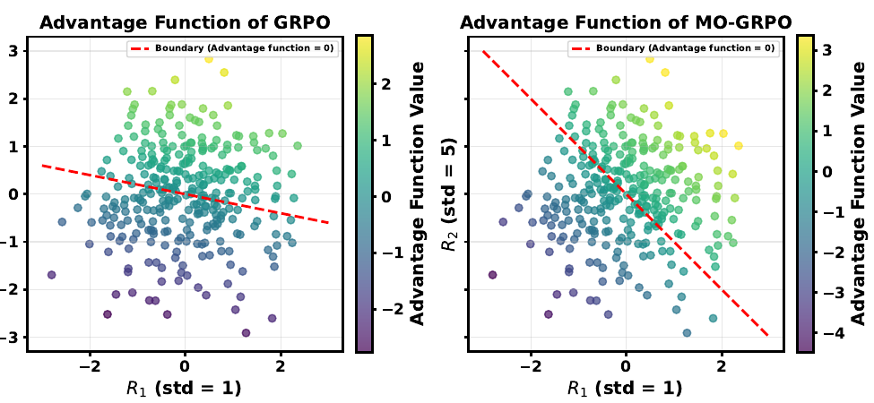

How MO-GRPO Balances Multiple Rewards
Guide to MO-GRPO: Mitigating Reward Hacking of Group Relative Policy Optimization on Multi-Objective Problems.
Language-model alignment often involves several objectives at once. A response may need to be helpful, safe, stylistically appropriate, and faithful to a source. Standard GRPO can optimize a combined reward, but the relative scales and variances of the individual rewards affect how strongly they influence the update.
The failure mode
In a multi-objective setting, improving the aggregate reward does not guarantee balanced progress. GRPO can favor one reward component while sacrificing others—an instance of reward hacking identified in our analysis. Manually tuning reward scales is possible, but it is task-dependent and can become brittle as training changes the reward distribution.
The MO-GRPO idea
MO-GRPO normalizes the reward functions according to the variances of their observed values. This automatically reweights their contributions to the loss while preserving the preference order induced by each reward. The analysis shows that the normalized components contribute evenly, removing the need to hand-tune their scales.

Evaluation
The paper evaluates the method in four domains: multi-armed bandits, simulated control with Mo-Gymnasium, WMT machine translation for English–Japanese and English–Chinese, and instruction following. Across these settings, MO-GRPO distributes learning signals more evenly across reward components and achieves more stable learning than standard GRPO.
Independent evidence from GDPO on mathematical reasoning
Subsequent work on GDPO independently studies a closely related design: normalizing each reward within a group before aggregating the resulting advantages. GDPO evaluates this principle on mathematical reasoning with competing correctness and response-length objectives, and reports better accuracy–length trade-offs than standard GRPO across multiple math benchmarks.
Although GDPO includes an additional batch-wise normalization step and is not a direct reproduction of MO-GRPO, its results provide further empirical evidence that the core per-reward normalization principle behind our method is effective beyond our original evaluation domains, including mathematical reasoning tasks.
Takeaway
The contribution is deliberately simple: normalize each objective using information already present in the sampled reward values. This targets a specific source of imbalance in multi-objective GRPO without introducing manual reward-scale tuning.
For the derivation, assumptions, experiments, and ablations, see the paper and code. For the related mathematical-reasoning evidence, see the GDPO paper.